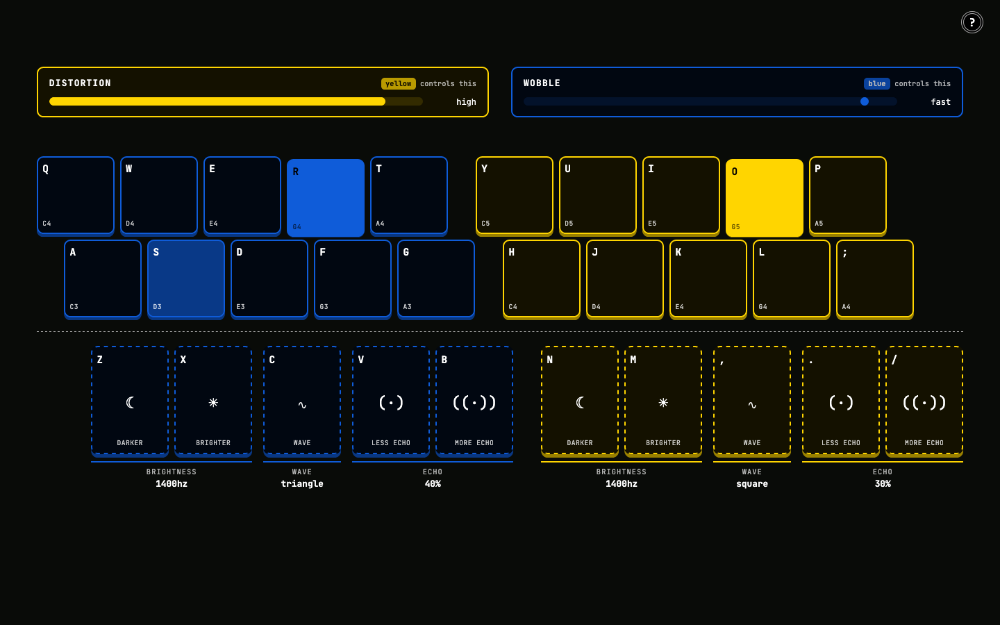
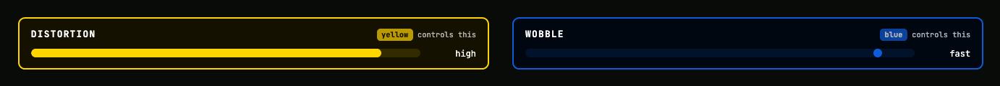
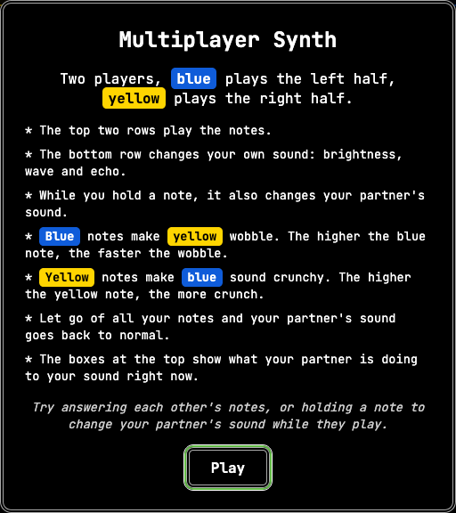
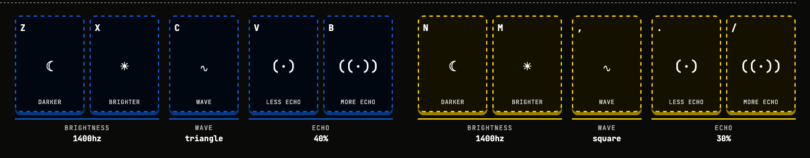
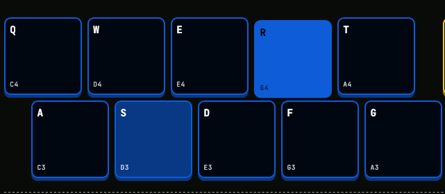

Multiplayer Synthesiser

Play Multiplayer SynthesiserCore interactive features
This multiplayer synthesiser can be played by two people, sharing the same computer and keyboard. One player has control over the left half, the other controls the right, with each player affecting a variable that affects the musical output. The yellow player controls the sound's distortion whereas the blue player controls its wobble. In addition to this, each player can adjust their sound's brightness, wave type, and echo during play. The conflict comes from the other player's sound and how it affects the combined output. Sometimes the combined variables and keys being played produce a sound that's pleasing, other times they don't. Each player has to notice patterns with their partner's inputs so they can adjust theirs accordingly. The skill progression comes from trial-and-error. That's one of its flaws, it's not an easy instrument to pick-up. You need to have an understanding of what notes work together, be able to read the other player's actions whilst playing, know what tempo that should be played at any given moment, and when a variable should be adjusted.
Another interactive feature comes from the sound feedback and how that influences how each player plays. Making the distortion and wobble variables distinct enough allowed each player an understanding in how they influence the combined output. Neither player can cooperate if they don't understand their control. Some of the feedback received in the user testing pointed to feelings of frustration or boredom when the other player had more control over them. The level of control between the two players is essentially equal so that each player feels as if they need the other as much as they are needed by them.
Extended technique
With this instrument, each key press also changes the other player's sound in real time.
- When the blue player holds a note, yellow's sound starts to wobble. Different blue notes give a slower or faster wobble.
- When the yellow player holds a note, blue's sound becomes more distorted. Higher yellow notes give more distortion.
- When the player lets go, their partner's sound returns to normal.

So neither player controls their own wobble or distortion. They only hear it happening, so they have to listen to each other and respond. The instrument itself is built with Tone.js, which sits on top of the browser's built-in Web Audio system. Each player's sound travels through a chain of effects:
- A synthesiser creates the note.
- Blue's notes switch on a wobble effect (an auto filter) in yellow's chain. Yellow's notes switch on a distortion effect (a waveshaper) in blue's chain.
- Each player also has their own brightness, echo and reverb effects.
The key presses switch these effects on and off while each person plays.
Design system
The design system made it as easy as possible for first time players to understand the controls. The opening popup box established knowledge for how the instrument should be played. If this isn't communicated clearly, then players would easily become frustrated or lose interest.

Keeping all of the controls within a confined area on the keyboard helped simplify what is quite a complex instrument to play well. The control variable keys (on the bottom row) are separated from the notes to avoid confusion as to what does what. The layout matches the system with the real world and each player's respective controls are a distinct colour. This quickly communicates who controls what and where the controls are, to minimise players having to look down at the keyboard.

It was also important to clearly visualise the keys being pressed and the effect that has on the variables, allowing the opportunity for each player to react accordingly to the other player's inputs. A fade trail was added so that each player could easily see the key the other player had just played. The length of the fade also matches the current echo setting for that player, so that heard notes can be identified by their played key.

There's also an influence meter above each control so it can be understood how the other player's inputs affect the sound. These are visually presented so they can be interpreted in each player's peripheral vision, so they don't have to take their eye off what's most important. Also, each of the variable control keys contain a symbol so users can identify their purpose more easily, without having to read any text.
Commit log
| Author | Date | Subject | Body |
|---|---|---|---|
| TommyAvery22 | 27 Oct 2026, 16:20 | produced the git commit history as .csv file | |
| TommyAvery22 | 27 Oct 2026, 15:53 | label each player by their colour in the popup | |
| TommyAvery22 | 27 Oct 2026, 14:55 | Merge branch 'final-instrument' of https://github.com/TommyAvery22/audioinstrument into final-instrument | |
| TommyAvery22 | 27 Oct 2026, 14:55 | call the players blue and yellow in the popup and meters | replaced player 1 and player 2 with blue and yellow in the how to play popup and the meter captions, each highlighted in its own colour |
| TommyAvery22 | 27 Oct 2026, 08:02 | Remove header titles and add help button | |
| TommyAvery22 | 27 Oct 2026, 07:49 | Merge pull request #2 from instrument-final/final-instrument | Final instrument |
| TommyAvery22 | 27 Oct 2026, 07:49 | Merge branch 'final-instrument' into final-instrument | |
| TommyAvery22 | 27 Oct 2026, 07:17 | made the layout fit medium to XL screens | keys now resize with the screen width so the whole keyboard always fits |
| TommyAvery22 | 27 Oct 2026, 06:56 | fixed the wobble not producing sound | |
| TommyAvery22 | 27 Oct 2026, 06:30 | made the distortion grittier instead of just louder | the distortion was mostly just making player 1 louder. now player 1's sound gets boosted going into the distortion so it actually crunches, then turned back down after so the volume stays about the same. both go back to normal when player 2 lets go |
| TommyAvery22 | 27 Oct 2026, 06:23 | replace metallic variable with distortion | |
| TommyAvery22 | 27 Oct 2026, 05:25 | made the background tint fade slowly | added a transition so the background drifts between colours instead of flashing every time a note is played |
| TommyAvery22 | 27 Oct 2026, 04:42 | rewrite the intro dialog and remove the page title | The dialog now explains the keyboard split, the note and control rows, how each player's notes affect their partner's sound, and what the boxes at the top show, with a suggestion for playing together. The page title is removed so the instrument starts at the top of the page, and a ? button in the top right reopens the dialog. |
| TommyAvery22 | 27 Oct 2026, 04:33 | animate the wobble dot to bounce at the real wobble speed | wobble keyframe animation slides the dot from one end of the meter track to the other and back |
| TommyAvery22 | 27 Oct 2026, 04:05 | Save ring and wobble state when players play so the meters can show it | Adds ringing and ringType to player 1, and wobbling and wobbleRate to player 2. startNote saves the ring type or wobble speed a player's note sets on their partner, and endNote clears it once that player lets go of every key. The sound is unchanged; these values are for the influence meters to read. |
| TommyAvery22 | 27 Oct 2026, 03:57 | Group control keys into brightness, wave and echo with live values | New controlGroups list and buildControlGroup function put related control keys together: darker and brighter under brightness, wave on its own, less and more echo under echo. updateDisplay writes each group's current setting underneath, so brightness shows the filter cutoff in hz, echo shows a percentage, and wave shows the name of the current wave shape. |
| TommyAvery22 | 27 Oct 2026, 03:27 | Add ring and wobble influence meters above the keyboard | New buildMeter function creates a meter for each player, drawn in their partner's colour. Player 1's "ring" meter shows how metallic player 2 is making their sound; player 2's "wobble" meter shows how fast player 1 is making their sound wobble. The meters sit above the keyboard and start empty (pure / still) until they're connected to the sound. |
| TommyAvery22 | 27 Oct 2026, 02:51 | main.js | matched the trail length to each player's echo |
| TommyAvery22 | 27 Oct 2026, 02:49 | updated styling for the keyboard | switched to a mono font, styled the keys and separated the controls. gave each control key a symbol with its name underneath |
| TommyAvery22 | 27 Oct 2026, 02:39 | add style.css | faded keys out slowly after they're let go |
| TommyAvery22 | 27 Oct 2026, 02:33 | removed mp3 file | |
| TommyAvery22 | 27 Oct 2026, 02:31 | removed subtitle | |
| TommyAvery22 | 27 Oct 2026, 02:12 | Merge branch 'final-instrument' of https://github.com/TommyAvery22/audioinstrument into final-instrument | |
| TommyAvery22 | 27 Oct 2026, 02:10 | Removed subheading | |
| TommyAvery22 | 27 Oct 2026, 00:11 | create commit history | |
| TommyAvery22 | 27 Oct 2026, 00:11 | create commit history | |
| TommyAvery22 | 06 Oct 2026, 08:43 | fixed bug that stopped the cross-effects from working | moved the cross-mod lists out of the forEach so startNote can see them |
| TommyAvery22 | 06 Oct 2026, 08:43 | fixed bug that stopped the cross-effects from working | moved the cross-mod lists out of the forEach so startNote can see them |
| TommyAvery22 | 06 Oct 2026, 08:36 | Player 1's notes make player 2's wobble | made player 1's notes wobble player 2's filter |
| TommyAvery22 | 06 Oct 2026, 08:36 | Player 1's notes make player 2's wobble | made player 1's notes wobble player 2's filter |
| TommyAvery22 | 06 Oct 2026, 08:02 | made player 2 notes make player 1's sound different | made player 2's notes change player 1's frequency modulation |
| TommyAvery22 | 06 Oct 2026, 08:02 | made player 2 notes make player 1's sound different | made player 2's notes change player 1's frequency modulation |
| TommyAvery22 | 06 Oct 2026, 07:50 | made player 1 an fm synth | |
| TommyAvery22 | 06 Oct 2026, 07:50 | made player 1 an fm synth | |
| TommyAvery22 | 06 Oct 2026, 07:43 | started conflict prototype from the keyboard split display | |
| TommyAvery22 | 06 Oct 2026, 07:43 | started conflict prototype from the keyboard split display | |
| TommyAvery22 | 06 Oct 2026, 05:45 | Update the status as players play | showed each player's notes and sound settings |
| TommyAvery22 | 06 Oct 2026, 05:45 | Update the status as players play | showed each player's notes and sound settings |
| TommyAvery22 | 06 Oct 2026, 05:41 | show each player's status on screen | added a coloured section for each player. changed player 1's colour |
| TommyAvery22 | 06 Oct 2026, 05:41 | show each player's status on screen | added a coloured section for each player. changed player 1's colour |
| TommyAvery22 | 06 Oct 2026, 05:27 | make bottom row keys change the sound characteristics | made the bottom row change filter, wave and echo |
| TommyAvery22 | 06 Oct 2026, 05:27 | make bottom row keys change the sound characteristics | made the bottom row change filter, wave and echo |
| TommyAvery22 | 06 Oct 2026, 05:23 | added filter, echo, and shared reverb | added a filter and echo per player and a shared reverb |
| TommyAvery22 | 06 Oct 2026, 05:23 | added filter, echo, and shared reverb | added a filter and echo per player and a shared reverb |
| TommyAvery22 | 06 Oct 2026, 05:17 | added a synth for each player | gave each player a synth and played notes from the keyboard |
| TommyAvery22 | 06 Oct 2026, 05:17 | added a synth for each player | gave each player a synth and played notes from the keyboard |
| TommyAvery22 | 06 Oct 2026, 05:11 | starts the audio when the dialog closes | started tone when the intro dialog closes |
| TommyAvery22 | 06 Oct 2026, 05:11 | starts the audio when the dialog closes | started tone when the intro dialog closes |
| TommyAvery22 | 06 Oct 2026, 05:05 | track which keys each player is holding | tracked which note keys each player is holding |
| TommyAvery22 | 06 Oct 2026, 05:05 | track which keys each player is holding | tracked which note keys each player is holding |
| TommyAvery22 | 06 Oct 2026, 05:00 | respond to key inputs | logged which player pressed each key |
| TommyAvery22 | 06 Oct 2026, 05:00 | respond to key inputs | logged which player pressed each key |
| TommyAvery22 | 06 Oct 2026, 04:56 | fixed missing brackets | fixed missing brackets between player 1 and 2 |
| TommyAvery22 | 06 Oct 2026, 04:56 | fixed missing brackets | fixed missing brackets between player 1 and 2 |
| TommyAvery22 | 06 Oct 2026, 04:52 | Turned key codes into readable labels | added keyLabel to show keys as they're printed |
| TommyAvery22 | 06 Oct 2026, 04:52 | Turned key codes into readable labels | added keyLabel to show keys as they're printed |
| TommyAvery22 | 06 Oct 2026, 04:49 | added findKey function | added findKey to look up which player owns a key |
| TommyAvery22 | 06 Oct 2026, 04:49 | added findKey function | added findKey to look up which player owns a key |
| TommyAvery22 | 06 Oct 2026, 04:36 | added player 2's keys | added player 2 on the right side, who will play octave higher |
| TommyAvery22 | 06 Oct 2026, 04:36 | added player 2's keys | added player 2 on the right side, who will play octave higher |
| TommyAvery22 | 06 Oct 2026, 04:34 | added player 1's note and control keys | |
| TommyAvery22 | 06 Oct 2026, 04:34 | added player 1's note and control keys | |
| TommyAvery22 | 06 Oct 2026, 04:32 | altered main.js | removed class test code, kept the intro dialog |
| TommyAvery22 | 06 Oct 2026, 04:32 | altered main.js | removed class test code, kept the intro dialog |
| TommyAvery22 | 05 Oct 2026, 23:27 | assigned colours to each player | Linked each player (player 1 & 2) to their respective colours. Also updated fonts |
| TommyAvery22 | 05 Oct 2026, 23:27 | assigned colours to each player | Linked each player (player 1 & 2) to their respective colours. Also updated fonts |
| TommyAvery22 | 05 Oct 2026, 23:13 | Added player colours and updated colours in root | Ensured that each player is represented by a distinct colour |
| TommyAvery22 | 05 Oct 2026, 23:13 | Added player colours and updated colours in root | Ensured that each player is represented by a distinct colour |
| TommyAvery22 | 05 Oct 2026, 22:17 | pinned tone version and allowed zooming | |
| TommyAvery22 | 05 Oct 2026, 22:17 | pinned tone version and allowed zooming | |
| TommyAvery22 | 05 Oct 2026, 22:17 | replaced test controls with an empty stage for the display | |
| TommyAvery22 | 05 Oct 2026, 22:17 | replaced test controls with an empty stage for the display | |
| TommyAvery22 | 05 Oct 2026, 22:05 | Updated intro dialogue message | Changed the message to quickly explain the synth and its mapping |
| TommyAvery22 | 05 Oct 2026, 20:47 | fixed timezone | |
| TommyAvery22 | 05 Oct 2026, 20:43 | Fixed bug - incorrect element id | oscilator wasn't working because it wasn't calling the correct element |
| TommyAvery22 | 05 Oct 2026, 20:38 | Fixed bugs - test button & toneInit | Corrected case sensitive inputs and incorrect element id's |
| TommyAvery22 | 05 Oct 2026, 20:19 | added timezone | |
| TommyAvery22 | 05 Oct 2026, 14:41 | Added audio play/pause | |
| TommyAvery22 | 04 Oct 2026, 23:58 | Put buttons and audio into single main tag | |
| TommyAvery22 | 04 Oct 2026, 23:48 | Altered the spacing between lines | |
| TommyAvery22 | 15 Sep 2026, 23:46 | added random and temporal | implemented an audio track player and added in our random track location button |
| TommyAvery22 | 25 Aug 2026, 01:28 | css and js edge case | added visual feedback to note playing, and handled edge cases for key press |
| TommyAvery22 | 25 Aug 2026, 01:19 | added event listeners for second key | separated the start and end of playing the note as well as mouseleave |
| TommyAvery22 | 16 Aug 2026, 19:13 | added our design system css | we set up some variables for colour and the border, and applied style to our dialog vox |
| TommyAvery22 | 16 Aug 2026, 19:04 | added audio init | added an event listener on dialog close to start the audio system |
| TommyAvery22 | 16 Aug 2026, 18:58 | added intro dialog | added dialog element and a button that closes it |
| TommyAvery22 | 29 Jul 2026, 15:15 | init commit | added initial files and working "test sound" button |